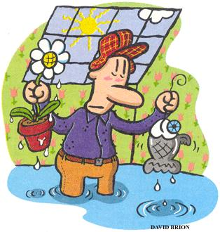

Hey, Ernold, I noticed you hung curtains in your see-through shanty," my buddy Clutch called from the pool table.
They weren't curtains. They I were vertical blinds. But I was sure the distinction would escape all the
Grotty's Tavern regulars. "Maybe you've got a La-Z-Boy in there, too," Clutch plowed on. "Some doilies on the end table -hmmm?"'
How could I explain to a whole room full of flannel-shirted fishermen how I came to use my wife's catalog-ordered hothouse for my ice-fishing shanty?
It started one Saturday afternoon, my blue fingers trying to suck warmth and color from a bowl of steaming chili. The final score for a morning on the windswept ice in front of our home: Fish 0, Frostbite 20.
"Honeeey," my wife, Mudge (short for Magenta), called in her I've-got-a-project-for-you voice. "Where's the best place for my greenhouse to get the most sun?"
If you know my wife, you know that's not really a question. She's looking for buy-in. She knows she needs me for assembling and lifting and hauling and she would just as soon I did it with a happy heart.
'Why'd you stick it right out on the ice in the middle of the darn lake. No shadows out there."
Four hours later, I stared out our front room window at the newest addition to Mudge's gardening domain. A fisherman emerged from a nearby windowless shanty, blinking in the bright light. He stopped in front of the metal-framed structure, late afternoon sun pouring through the clear plastic cover, and studied the architectural anomaly that had magically sprung up while he was cocooned in his outhouse on skids.
Inspiration!
"Mudge," I called sweetly. "You know how I get all grouchy in the winter?"
"That's SAD."
Sure is"
"No, it's Sunlight Affect Deficiency... something," Mudge corrected.
"Whatever. I was thinking maybe I could use your hothouse to catch a few rays on the weekend. Who knows, I might be more cheerful around here if I spent more time in the sun."
"How thoughtful of you," Mudge remarked, pausing on her way to the basement with a bucket of kitchen scraps for our vermiculture box.
Another inspiration. "And, by the way, why don't I just keep the worms right out there with me? That way I can keep an eye on them."
The next day I trudged out to my snowbound tanning salon. Pushing aside trays and seed packets and starter soil, I slid the worm box next to my lawn chair. Then I stripped down to my shorts (for appearance's sake) and dangled a line through an unobtrusive hole in the floor.
Angry footsteps scrunched across the ice.
"I saw that!' Mudge announced, yanking the door open. Goose bumps ran up and down my naked limbs.
"Wait and see." I backpedaled. "I'll be a different person this winter - a little sunshine, a little fishing."
"That's not why I bought this greenhouse, Ernold," Mudge persisted. "I need to get my dame's rocket on its way, not to mention my Dolichos lablab and Gomphrena globosa ."
In case you're wondering, that's how I got around to hanging the vertical blinds. A man needs some privacy when he's fishing. I mean, what's the good of getting out of the house if you're going to leave yourself open to constant scrutiny? Defeats the purpose. Finally, after some negotiating around watering, thinning sprouts and harvesting vermi-compost. I was able to hang the blinds on the side facing the house.
A couple of Saturdays later, following an especially warm and sunny week, I slogged through ankle deep slush to my shanty/nursery, looking forward to a morning of sun and surf. As I got closer, I paused, not sure of what I was seeing. Worms floating in space?
Inside, icy water threatened to swamp my boot tops. A jumbo perch swam around with his mouth open, gobbling up red worms as they floated above their box. A chunky sunfish brunched on our vermi-composters. My shanty had become an aquarium, a scaled-down Sea World. How could this have happened? Is this what they mean by the greenhouse effect? What would I tell Mudge? After a moment's thought, I did the only sensible thing I could do. I grabbed my fishing net and a camera.
Back at Grotty's, I nonchalantly passed around a photo of 32 monster sunfish and seven perch resting in a bed of fresh snow
Awestruck, Clutch asked, "What's your secret?"
"Peas," I replied to the suddenly quiet crowd in the tavern.
"Canned or frozen?" Clutch asked
"I prefer canned, but frozen works, too."
"And?" Clutch gestured anxiously.
"Well, I put three or four around the ice hole..."
"Yeah?"
"...and when a fish comes up to take a pea, I grab him."
|
 |
|
|